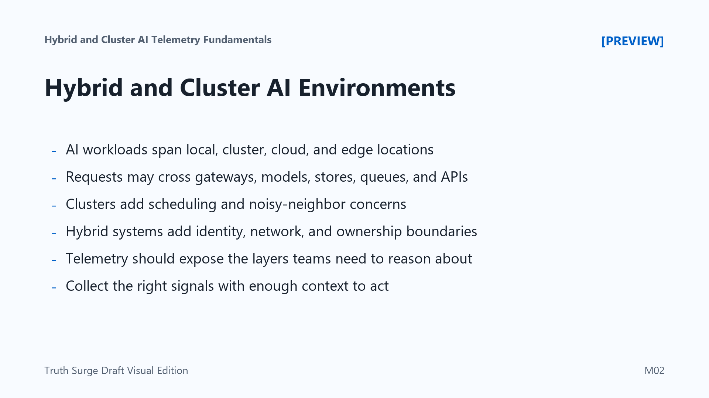

Hybrid and Cluster AI Environments
Connecting to LMS... Progress: in progress

Narration
AI workloads rarely live in one neat place. A team may prototype on developer machines, test on lab hardware, run batch jobs in a private cluster, serve inference from Kubernetes, use managed cloud services for storage or model endpoints, and deploy selected workloads at the edge. A hybrid AI environment combines these locations, ownership models, and operational assumptions.
A single user request may touch an API gateway, authentication service, model-serving route, retrieval service, vector store, cache, database, queue, GPU node, and external service. A failure in any one layer can look like a model problem from the outside. Without enough context, teams may spend valuable time debating whether the issue belongs to the application, infrastructure, data platform, security controls, or a provider dependency.
Clusters add another dimension. Scheduling, resource allocation, workload placement, node health, accelerator availability, queue depth, and noisy-neighbor effects all influence AI behavior. A model may be correct, but it can still miss latency expectations if it waits too long for a GPU, loads from slow storage, or shares a node with a workload that consumes memory bandwidth.
Hybrid systems also introduce network boundaries, identity boundaries, data movement, and operational ownership questions. Telemetry should make these layers visible enough for teams to act together. The goal is not to collect everything. The goal is to collect the signals that reveal where work traveled, what resources it used, which boundary it crossed, and what changed when behavior became unhealthy.